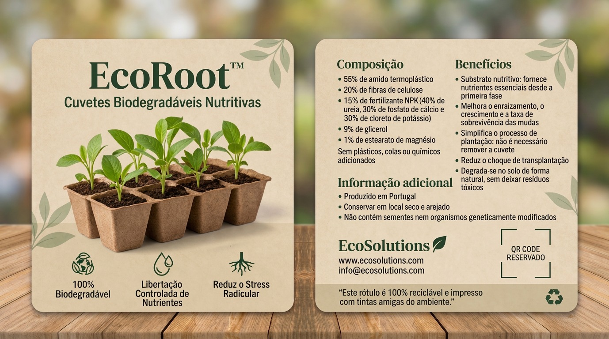

Cuvetes biodegradáveis com libertação controlada de nutrientes
O EcoRoot consiste numa cuvete biodegradável desenvolvida para viveiros florestais e agrícolas, permitindo o plantio direto no solo sem necessidade de remoção do recipiente.
Produzido a partir de biopolímeros de origem renovável e fibras naturais, o material garante suporte estrutural durante o crescimento inicial da planta e degrada-se progressivamente após o transplante.
A cuvete integra nutrientes essenciais (azoto, fósforo e potássio), que são libertados gradualmente no solo através da humidade e da degradação do material biodegradável.
A estrutura porosa facilita a circulação de água e oxigénio, promovendo condições ideais para o desenvolvimento radicular.
O EcoRoot é composto por uma matriz de amido termoplástico (TPS), fibras de celulose e fertilizante NPK.
O amido garante biodegradabilidade, enquanto as fibras aumentam a resistência mecânica e estabilidade estrutural.
A incorporação de nutrientes transforma a cuvete num sistema ativo de suporte ao crescimento vegetal.
O rótulo inclui informação técnica como composição, instruções de utilização e características do sistema de libertação controlada de nutrientes.
